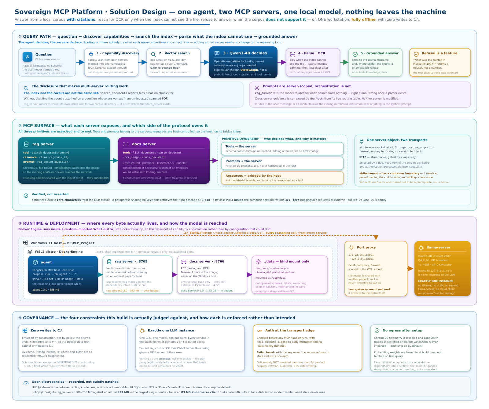

<title>Sovereign MCP Platform — As-Built Design</title>
<style>
  :root {
    --bg: #ffffff; --fg: #0f172a; --muted: #475569; --line: #e2e8f0;
    --card: #f8fafc; --accent: #1d4ed8; --warn: #b45309; --ok: #15803d;
    --code-bg: #f1f5f9;
  }
  @media (prefers-color-scheme: dark) {
    :root {
      --bg: #0b1120; --fg: #e2e8f0; --muted: #94a3b8; --line: #1e293b;
      --card: #111c30; --accent: #60a5fa; --warn: #fbbf24; --ok: #4ade80;
      --code-bg: #16233b;
    }
  }
  :root[data-theme="dark"] {
    --bg: #0b1120; --fg: #e2e8f0; --muted: #94a3b8; --line: #1e293b;
    --card: #111c30; --accent: #60a5fa; --warn: #fbbf24; --ok: #4ade80;
    --code-bg: #16233b;
  }
  :root[data-theme="light"] {
    --bg: #ffffff; --fg: #0f172a; --muted: #475569; --line: #e2e8f0;
    --card: #f8fafc; --accent: #1d4ed8; --warn: #b45309; --ok: #15803d;
    --code-bg: #f1f5f9;
  }

  body {
    background: var(--bg); color: var(--fg);
    font: 16px/1.65 "Segoe UI", -apple-system, Helvetica, Arial, sans-serif;
    margin: 0; padding: 2.5rem 1.25rem 5rem;
  }
  main { max-width: 1180px; margin: 0 auto; }
  h1 { font-size: 2rem; line-height: 1.2; margin: 0 0 .4rem; letter-spacing: -.02em; }
  h2 {
    font-size: 1.25rem; margin: 3rem 0 .75rem;
    padding-bottom: .4rem; border-bottom: 1px solid var(--line);
  }
  h3 { font-size: 1rem; margin: 1.75rem 0 .5rem; }
  .lede { color: var(--muted); font-size: 1.05rem; margin: 0 0 .5rem; }
  .meta { color: var(--muted); font-size: .85rem; margin: 0 0 2rem; }
  code, .mono {
    font-family: "Cascadia Code", Consolas, "SF Mono", Menlo, monospace;
    font-size: .88em; background: var(--code-bg);
    padding: .12em .38em; border-radius: 4px;
  }
  pre {
    background: var(--code-bg); padding: 1rem 1.1rem; border-radius: 8px;
    overflow-x: auto; border: 1px solid var(--line); font-size: .85rem; line-height: 1.55;
  }
  pre code { background: none; padding: 0; }

  figure { margin: 1.5rem 0 .5rem; }
  .diagram {
    background: #ffffff; border: 1px solid var(--line);
    border-radius: 10px; padding: .75rem; overflow-x: auto;
  }
  .diagram img { display: block; width: 100%; min-width: 900px; height: auto; }
  figcaption { color: var(--muted); font-size: .85rem; margin-top: .6rem; }

  .tablewrap { overflow-x: auto; }
  table { border-collapse: collapse; width: 100%; font-size: .92rem; margin: .75rem 0; }
  th, td { text-align: left; padding: .55rem .7rem; border-bottom: 1px solid var(--line); vertical-align: top; }
  th { font-weight: 600; color: var(--muted); font-size: .8rem; text-transform: uppercase; letter-spacing: .04em; }
  td:first-child { white-space: nowrap; }

  .callout {
    background: var(--card); border: 1px solid var(--line);
    border-left: 3px solid var(--accent);
    border-radius: 6px; padding: .9rem 1.1rem; margin: 1.25rem 0;
  }
  .callout.warn { border-left-color: var(--warn); }
  .callout p { margin: .35rem 0; }
  .callout strong { color: var(--fg); }

  .pass { color: var(--ok); font-weight: 600; }
  .flag { color: var(--warn); font-weight: 600; }
  ul { padding-left: 1.25rem; }
  li { margin: .3rem 0; }
  .links a { color: var(--accent); margin-right: 1.25rem; }
  footer { margin-top: 3.5rem; padding-top: 1rem; border-top: 1px solid var(--line); color: var(--muted); font-size: .85rem; }
</style>

<main>
  <h1>Sovereign MCP Platform — as-built design</h1>
  <p class="lede">A local, open-source, air-gapped-style Model Context Protocol platform: a LangGraph agent acting as MCP host over two independent MCP servers, all reasoning done by one already-running local LLM.</p>
  <p class="meta">Phases 1–6 complete · companion to <code>HLD.md</code> (architecture), <code>resource-governance.md</code> (policy) and <code>docs/design.md</code> (decision record)</p>

  <div class="callout warn">
    <p><strong>This diagram documents what runs, not what was drawn.</strong></p>
    <p>HLD §2 shows three sibling containers connected by <code>stdio</code>. That topology is not realisable: stdio works by a parent process owning a child's stdin/stdout, and sibling containers share no process tree. Under compose those edges are HTTP. The discrepancy is recorded rather than silently patched, because <code>HLD.md</code> is the design baseline.</p>
  </div>

  <figure>
    <div class="diagram">
      
    </div>
    <figcaption class="links">
      Source: <a href="architecture.svg">architecture.svg</a> · Raster: <a href="architecture.png">architecture.png</a> (3120×2430)
    </figcaption>
  </figure>

  <h2>Components</h2>
  <div class="tablewrap">
    <table>
      <thead><tr><th>Component</th><th>Responsibility</th><th>Transport in</th><th>Image</th></tr></thead>
      <tbody>
        <tr><td><code>agent</code></td><td>MCP host/client; owns the reasoning loop and routes between servers</td><td>—</td><td>355 MB <span class="pass">✓</span></td></tr>
        <tr><td><code>rag_server</code></td><td>Vector search; exposes chunks as a resource and a grounded-answer prompt</td><td>HTTP <span class="mono">:8765/mcp</span> · stdio</td><td>933 MB <span class="flag">over budget</span></td></tr>
        <tr><td><code>docs_server</code></td><td>PDF parsing, OCR and chunking of not-yet-ingested documents</td><td>HTTP <span class="mono">:8766/mcp</span> · stdio</td><td>1.23 GB <span class="pass">✓</span></td></tr>
        <tr><td><code>llama-server</code></td><td>All inference. Shared, externally owned, never restarted by this project</td><td>HTTP <span class="mono">:8001</span></td><td>host process</td></tr>
        <tr><td><code>ChromaDB</code></td><td>Persisted 384-dim vectors, file-based</td><td>embedded</td><td>bind mount</td></tr>
      </tbody>
    </table>
  </div>

  <h2>The MCP primitives, and who owns what</h2>
  <p>All three primitives are exercised end to end. The division of responsibility is the interesting part:</p>
  <div class="tablewrap">
    <table>
      <thead><tr><th>Primitive</th><th>Owner</th><th>Note</th></tr></thead>
      <tbody>
        <tr><td><strong>Tools</strong></td><td>servers</td><td>The server's JSON Schema is passed through untouched into OpenAI function specs. Adding a tool needs no host change.</td></tr>
        <tr><td><strong>Prompts</strong></td><td>servers</td><td><code>rag_answer</code> is fetched via <code>prompts/get</code>, not hardcoded — the server owns how its corpus should be used.</td></tr>
        <tr><td><strong>Resources</strong></td><td>host bridges them</td><td>Resources are host-controlled and not model-addressable. The host exposes <code>chunk://</code> as a synthetic <code>read_chunk</code> tool and translates the call back into <code>resources/read</code>.</td></tr>
      </tbody>
    </table>
  </div>

  <div class="callout">
    <p><strong>Prompts are server-scoped; orchestration is not.</strong></p>
    <p><code>rag_answer</code> ends by telling the model to abstain when search finds nothing relevant — correct while <code>rag_server</code> is alone, actively wrong once <code>docs_server</code> exists, because <em>not in the index</em> stopped meaning <em>not in the corpus</em>. Cross-server guidance is therefore composed by the host from its live routing table. Neither server knows the other exists.</p>
  </div>

  <h2>Request path</h2>
  <pre><code>question
  └─ agent: merges both servers' tools into one namespace
     ├─ search_documents            → rag_server  (HTTP + x-api-key)
     │    └─ "N files are NOT in this index: scanned_osha_hotwork.pdf"
     ├─ parse_document              → docs_server (HTTP + x-api-key)
     │    └─ pdfminer finds 0 chars → Tesseract OCR
     └─ Qwen3 via host.docker.internal:8001 → port proxy → 127.0.0.1:8001
grounded answer, cited to the source file</code></pre>
  <p>That middle step is what makes multi-server routing work at all. Without <code>rag_server</code> disclosing files it cannot see, the agent abstained on a question whose answer sat in an un-ingested scanned PDF.</p>

  <h2>Security boundaries</h2>
  <ul>
    <li><strong>API key at the transport edge</strong> — checked before any MCP handler runs, with <code>hmac.compare_digest</code> so early-mismatch timing leaks nothing.</li>
    <li><strong>Fails closed</strong> — with the key env var unset the server refuses to start and exits non-zero, rather than starting unauthenticated.</li>
    <li><strong>No published ports</strong> — servers are reachable only on the compose network.</li>
    <li><strong>Path traversal refused</strong> — <code>docs_server</code> resolves filenames and compares against the corpus root; <code>../../../etc/passwd</code> is rejected.</li>
    <li><strong>Docker socket never mounted</strong> — keeping stdio under compose would have required it, which is root-equivalent host access. Rejected in favour of HTTP.</li>
    <li><strong>LLM stays loopback-bound</strong> — a port proxy on the WSL-facing adapter forwards to <code>127.0.0.1</code>, so inference is never exposed to the LAN and the shared model is never restarted.</li>
  </ul>
  <div class="callout warn">
    <p><strong>What the API key is not.</strong> One shared secret, correctly placed. No per-user identity, no per-tool scoping, no rotation, no audit trail, no transport encryption, no rate limiting. The production successor is an identity provider issuing short-lived scoped tokens. This is the seed of an auth story, not a complete one.</p>
  </div>

  <h2>Verified, not asserted</h2>
  <div class="tablewrap">
    <table>
      <thead><tr><th>Claim</th><th>Evidence</th></tr></thead>
      <tbody>
        <tr><td>OCR genuinely runs</td><td>pdfminer extracts <strong>0 characters</strong> from the fixture; the full page still comes back</td></tr>
        <tr><td>Retrieval is semantic</td><td>“keeping machinery in working order” → <em>Mechanical Integrity</em> at 0.718, sharing no keywords</td></tr>
        <tr><td>Model abstains</td><td>Out-of-corpus question returns a refusal; test also asserts no figure was invented</td></tr>
        <tr><td>Auth enforced</td><td>Keyless POST <em>from inside</em> the compose network → <code>401</code></td></tr>
        <tr><td>No runtime egress</td><td>0 requests to huggingface.co from the running container</td></tr>
        <tr><td>Bind mounts only</td><td><code>docker volume ls</code> empty; sole mount is <code>./data</code></td></tr>
        <tr><td>One LLM instance</td><td>Single <code>llama-server</code> process, unchanged PID across all six phases</td></tr>
        <tr><td>C:\ untouched</td><td>Every project cache path on C:\ still stale from July; deltas attributed to Chrome, Explorer and RDP</td></tr>
      </tbody>
    </table>
  </div>

  <h2>Open discrepancies</h2>
  <p>Recorded rather than patched — <code>resource-governance.md</code> §5 makes these deliberate edits, not side effects.</p>
  <div class="tablewrap">
    <table>
      <thead><tr><th>#</th><th>Design says</th><th>Reality</th></tr></thead>
      <tbody>
        <tr><td>1</td><td>HLD §2: stdio between sibling containers</td><td>Not realisable; compose edges are HTTP</td></tr>
        <tr><td>2</td><td>HLD §3: HTTP is a “Phase 5 variant”</td><td>HTTP is the default under compose</td></tr>
        <tr><td>3</td><td>Policy §2: <code>rag_server</code> 500–700 MB</td><td><strong>933 MB.</strong> Largest single contributor is the Kubernetes client at 83 MB, pulled by chromadb for a distributed mode this file-based store never uses</td></tr>
      </tbody>
    </table>
  </div>

  <h2>Known limitations</h2>
  <ul>
    <li>The scanned fixture is <strong>synthetic</strong> — the real OSHA/EIA PDF corpus is not yet present. Reproducible via <code>scripts/make_scanned_fixture.py</code>.</li>
    <li>The 0.50 similarity floor is calibrated against three fixtures and <strong>needs retuning</strong> once the real corpus is ingested.</li>
    <li><code>docs_server</code> output is not fed back into ChromaDB yet — OCR text reaches the agent but does not persist to the index.</li>
    <li>Tool selection on a 4B model is not deterministic; verification scripts drive cross-server dispatch directly rather than relying on the model choosing it.</li>
  </ul>

  <h2>Running it</h2>
  <pre><code>wsl -d DockerEngine
cd /mnt/m/MCP_Project
cp .env.example .env          # then set real keys
docker compose build
docker compose up -d rag_server docs_server
docker compose run --rm agent "What does OSHA require for mechanical integrity?"</code></pre>

  <footer>
    Generated from <code>design/architecture.svg</code>, the authoritative source. Regenerate the raster with
    <code>rsvg-convert -w 3120 architecture.svg -o architecture.png</code>.
  </footer>
</main>
